Reúne um grupo relevante e diverso de galerias, nacionais e internacionais, as quais contribuem de maneira construtiva e ativa para a comunidade artística.
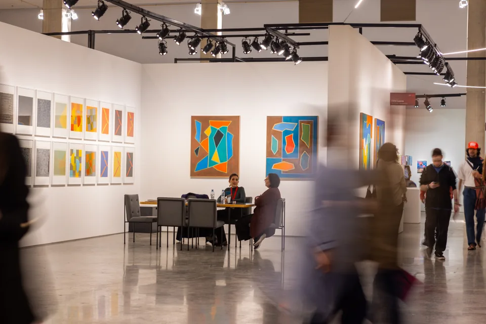
Desde 2022, a ArPa aproxima galerias, artistas, colecionadores, instituições e novos públicos por meio de uma feira curada, acolhedora e conectada à América Latina — criada para ver a arte em profundidade.

01 / A ArPa
A ArPa nasceu para propor uma nova experiência de feira, mais atenta e menos ansiosa, proporcionando encontros de maior qualidade.
Desde 2022, a ArPa aproxima galerias, artistas, colecionadores, instituições e novos públicos por meio de uma feira curada, acolhedora e conectada à América Latina — criada para ver a arte em profundidade.
Em uma escala cuidadosamente pensada, cada projeto ganha contexto, cada artista pode ser visto em profundidade e o público circula por pequenas exposições dentro da feira.
Fundada em 2022 por Camilla Barella, a partir de uma demanda do setor por uma nova referência relevante em São Paulo.
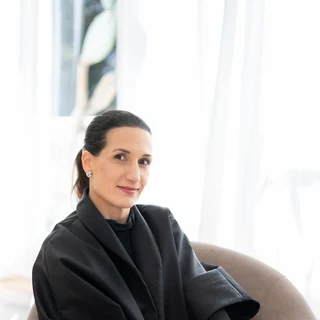
Camilla Barellafundadora e diretora da ArPa“A abordagem curatorial cria um ambiente mais atento ao diálogo entre obras, pesquisas, artistas e diferentes públicos.”

02 / Modelo curado
A seleção, a expografia e o tempo de permanência são partes do mesmo projeto institucional.

Galerias escolhidas pela direção com apoio de um comitê de conteúdo.
Propostas concebidas especialmente para cada edição e para o contexto da feira.
Direcionamento para que as galerias mostrem mais obras de um mesmo artista, a fim de preservar profundidade, imersão em sua prática e poética e fruição.
Resultados 2026
A edição 2026 reuniu +70 expositores em 5 setores, concedeu 3 prêmios e recebeu +13 mil visitantes.
Fonte: balanço institucional da edição 2026.
Alcance 2026
A experiência física se prolonga na imprensa e no ambiente digital, ampliando a conversa para além dos dias de feira.
Comunidade
Perfil declarado pela audiência respondente da edição 2026.
Identidade de gênero da audiência respondente
Mulheres representam 50%; homens, 45%; pessoas não binárias, 3%; e 2% preferem não responder.
Presença editorial
239matérias publicadas
Fonte: apresentação institucional ArPa — 6ª edição. Dados digitais de 1º de maio a 1º de junho de 2026.
03 / Setores
Cinco perspectivas complementares constroem uma feira plural, conectando mercado, pesquisa, formação e acesso.
Reúne um grupo relevante e diverso de galerias, nacionais e internacionais, as quais contribuem de maneira construtiva e ativa para a comunidade artística.

Dedicado a estandes solo de artistas da cena contemporânea, e conta com a colaboração de um curador convidado a cada ano.
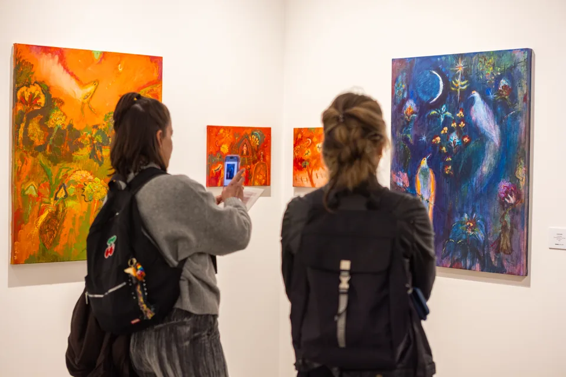
Projetos expositivos e conversas ao vivo conectam prática artística, pedagogia e construção de comunidade.
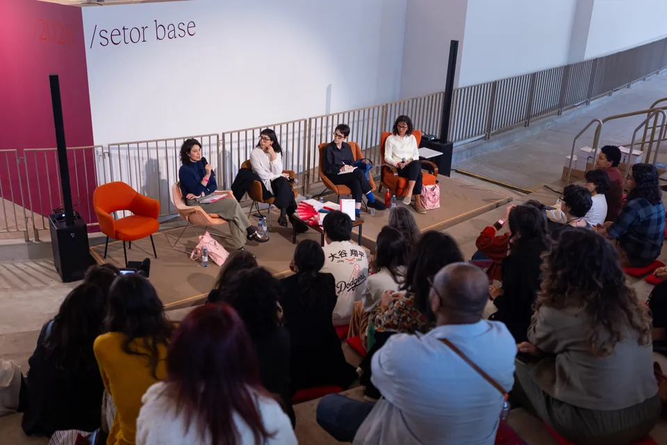
Editoras e publicações especializadas fazem do livro um espaço de circulação e pensamento crítico.
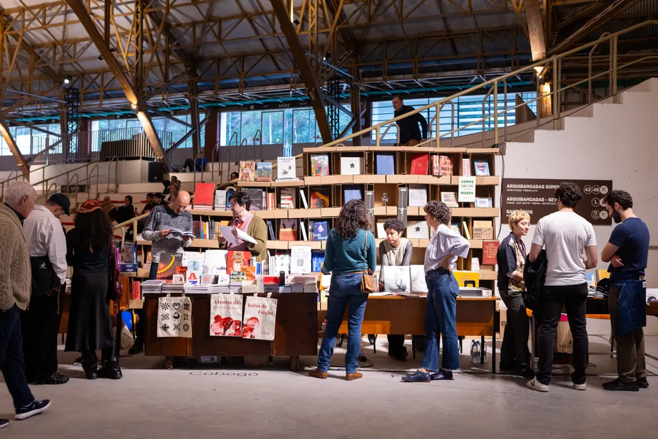
Museus e organizações apresentam iniciativas de pesquisa, memória, formação e acesso à arte.
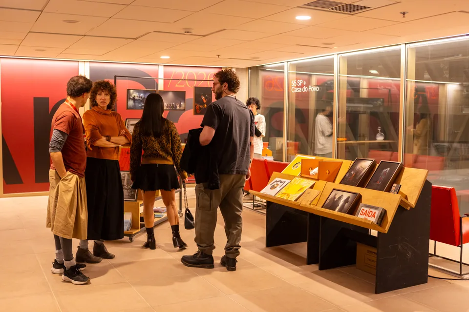
04 / Além da feira
A ArPa fortalece relações no tempo — antes, durante e depois dos dias de feira.
Programa contínuo e anual: visitas a ateliês, coleções privadas e exposições aproximam colecionadores, curadores, artistas e profissionais do circuito ao longo de todo o ano — um dos maiores diferenciais da ArPa.
Visitas temáticas, ações com escolas públicas e oficinas ampliam o acesso e prolongam a experiência.
Comunicação, formação de público e encontros mantêm a rede em movimento durante todo o ano.
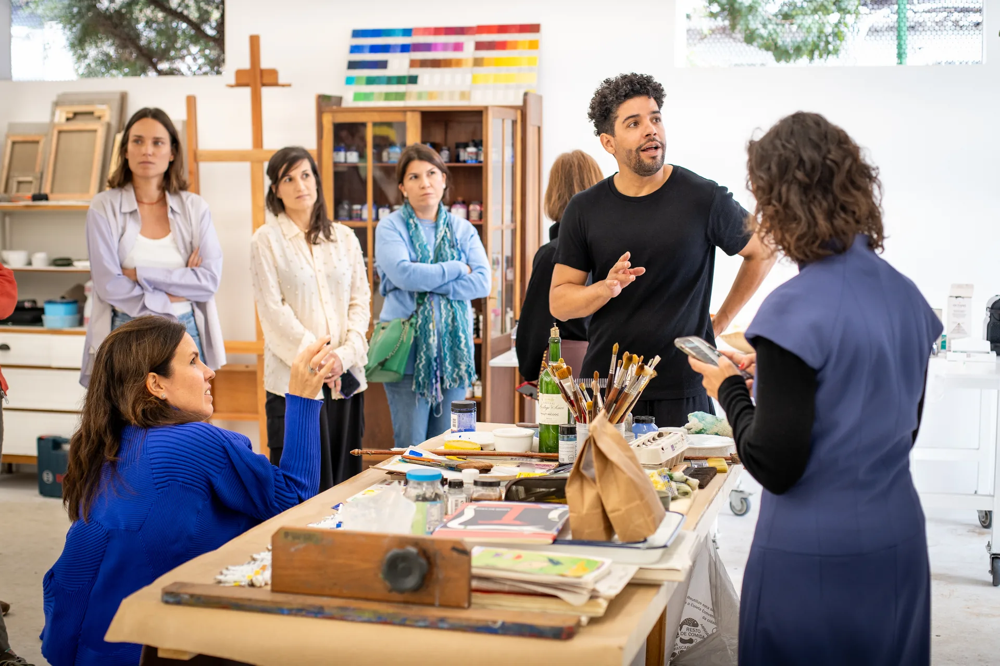
05 / Fomento
A feira transforma visibilidade em continuidade para artistas, galerias, instituições e acervos públicos.
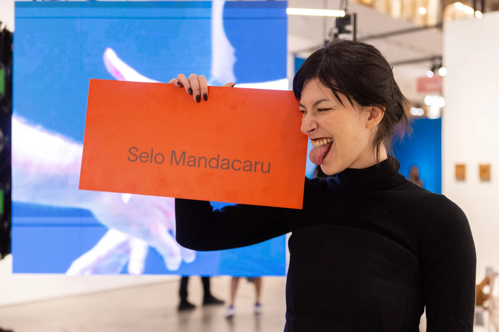
Descentralização
Reconhece artistas fora do eixo Rio–São Paulo e de periferias urbanas, ampliando a visibilidade de diferentes territórios.
Excelência curatorial
Valoriza propostas de destaque pela coerência expográfica, curatorial e intelectual.
Acervo público
Em parceria com instituições privadas, incorpora ao museu obras de artistas ainda não representados em sua coleção.
06 / Presença
Após 5 bem-sucedidas edições em São Paulo, a ArPa expande as fronteiras para Argentina, realizando sua primeira edição internacional em Buenos Aires, em setembro de 2026, a fim de reforçar sua identidade Latino-Americana.

Origem
Mercado Livre Arena Pacaembu
A feira anual e sua rede de galerias, instituições e públicos.Programação futura
16–20 de setembro de 2026 · Casa Victoria Ocampo
Uma experiência intimista e curada com galerias latino-americanas.07 / Parcerias em ação
Projetos sob medida conectam propósito, hospitalidade e cultura sem interromper o tempo de fruição da feira.
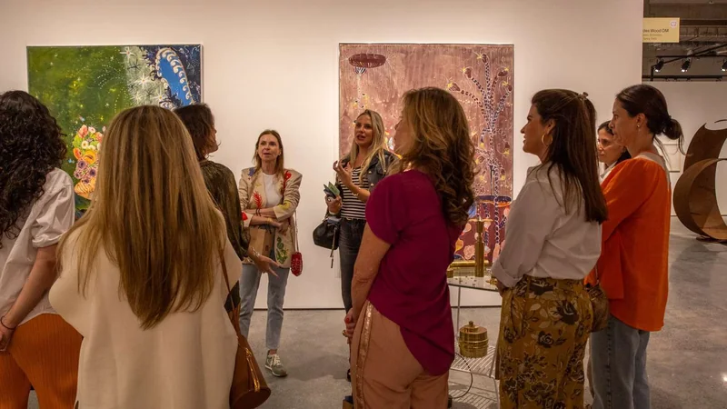
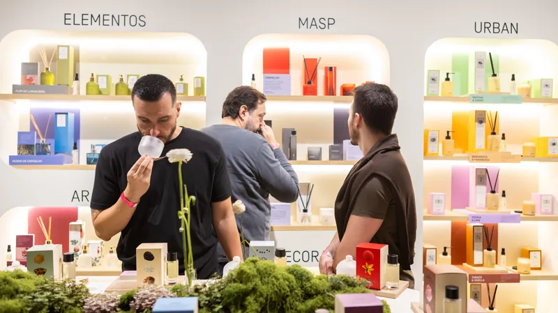
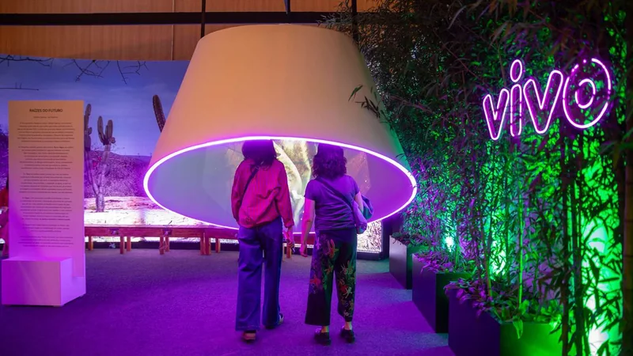
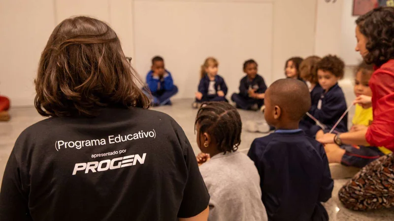

08 / Parcerias
Depois de cinco edições, a ArPa prepara sua 6ª edição em São Paulo e aprofunda sua presença latino-americana. Marcas podem criar contexto por meio de ativações, conteúdo, programas socioculturais e experiências exclusivas.
Patrocínio · 6ª edição 2027
Seja um patrocinador